长图分块与预处理
保留展开图比例，按 256×256 视野、192 像素步长分块，补齐边缘并适配网络输入。
个人算法实践 / SCIENTIFIC IMAGE ANALYSIS
题目来源：2025 年研究生数学建模 C 题
面向钻孔壁展开长图，基于 RIFT 构建分块分割、候选曲线拟合与参数质检管线，并比较 PyTorch 与 ONNX Runtime 的 CPU 推理表现。另以 DnCNN 开展合成噪声适配实验，分析条带抑制与细节保真的取舍。
钻孔壁展开图的分割结果，依次为原图、候选掩码和叠加图。点击图片可查看完整对照。
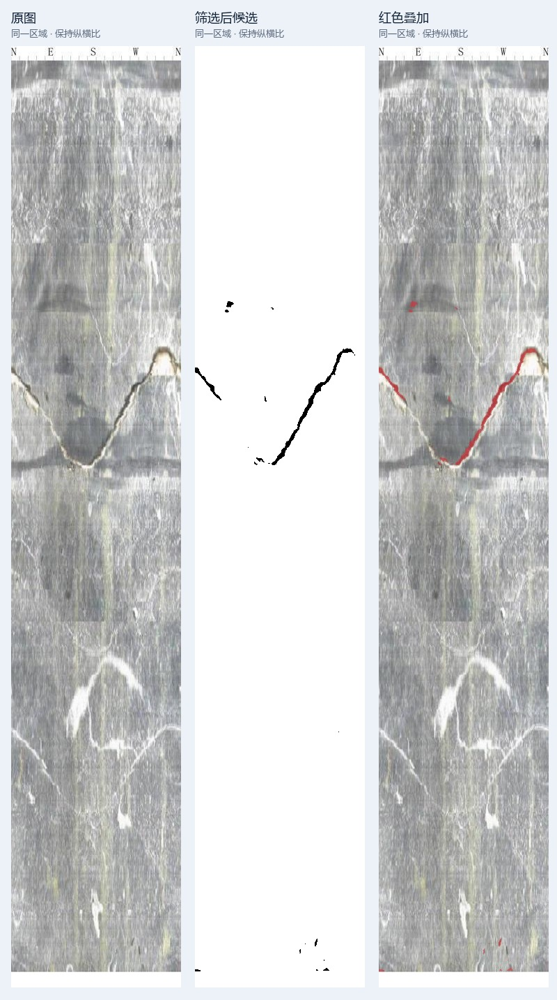
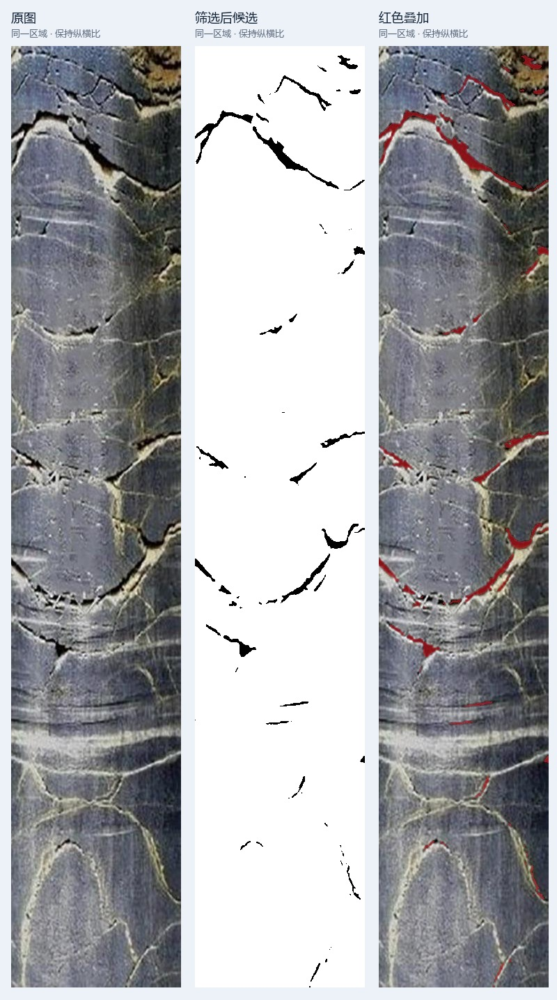
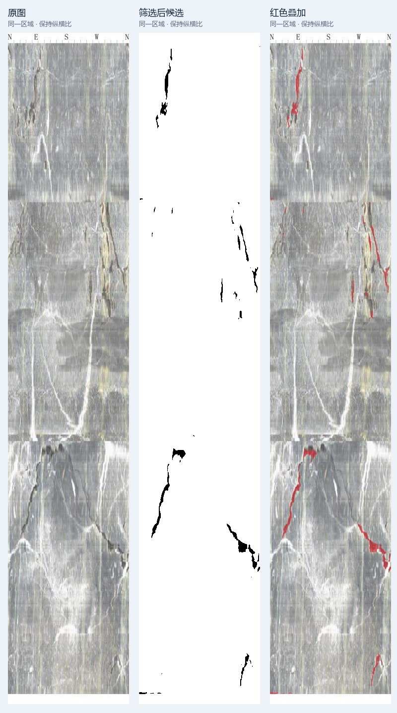
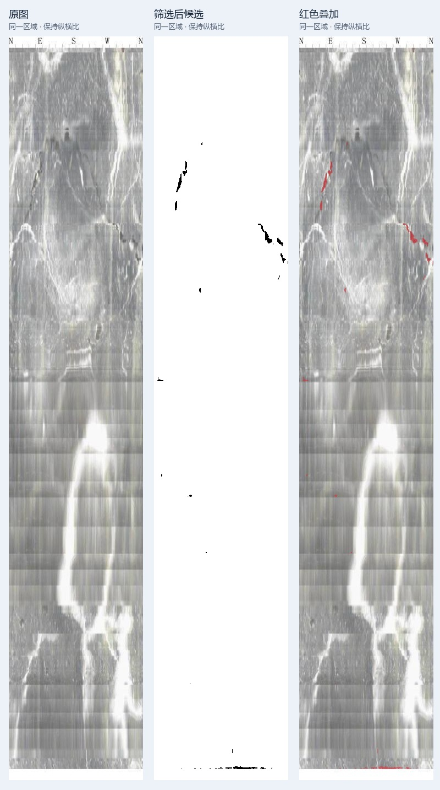
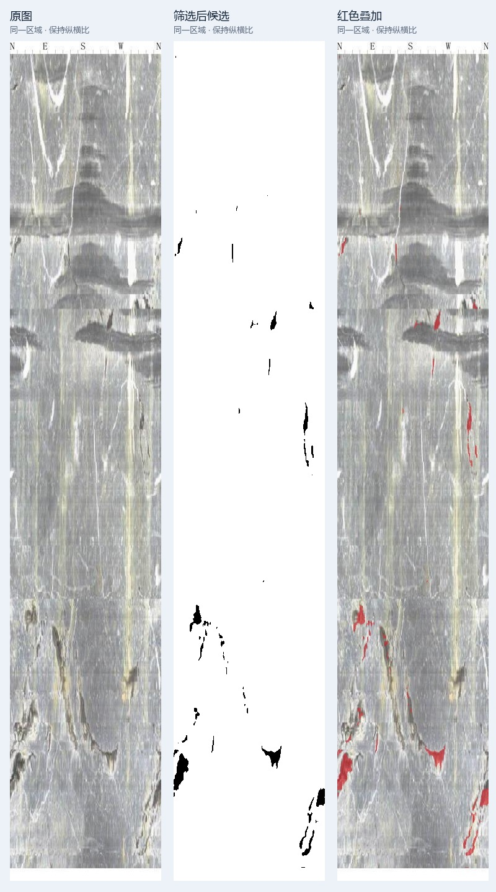
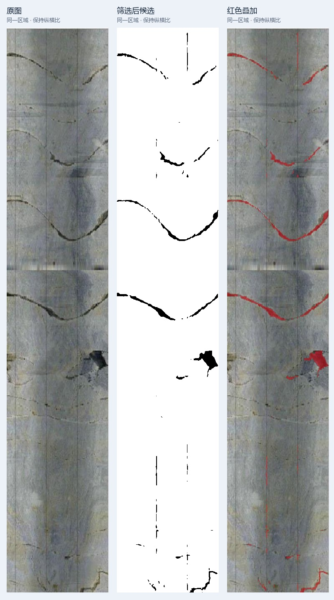
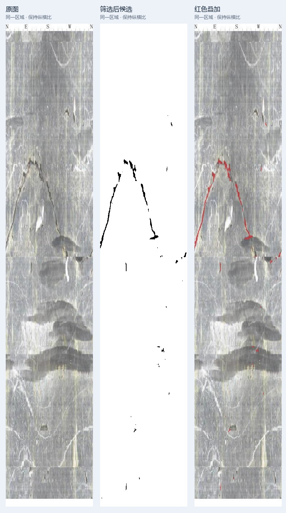
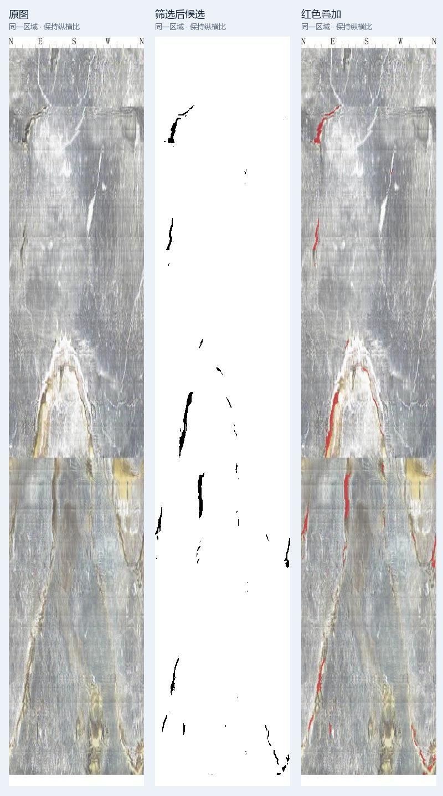

黑色为分割掩码中的候选区域，红色为原图上的对应叠加。
保留展开图比例，按 256×256 视野、192 像素步长分块，补齐边缘并适配网络输入。
对分块进行模型推理，通过重叠概率平均恢复原图尺寸，阈值分割后去除非成像白边，输出掩码与叠加图。
从骨架点构建多组曲线假设，结合覆盖率、间隙与残差筛选结果，输出编号图、参数表及待复核片段。
图 1-2 · C01。对分割候选点进行固定周期正弦拟合；绿色实线表示观测支持，虚线表示观测间隙内的拟合轨迹。其他编号保留为待复核候选。
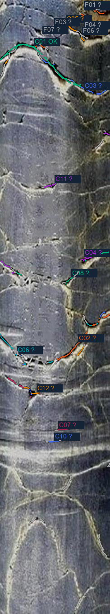
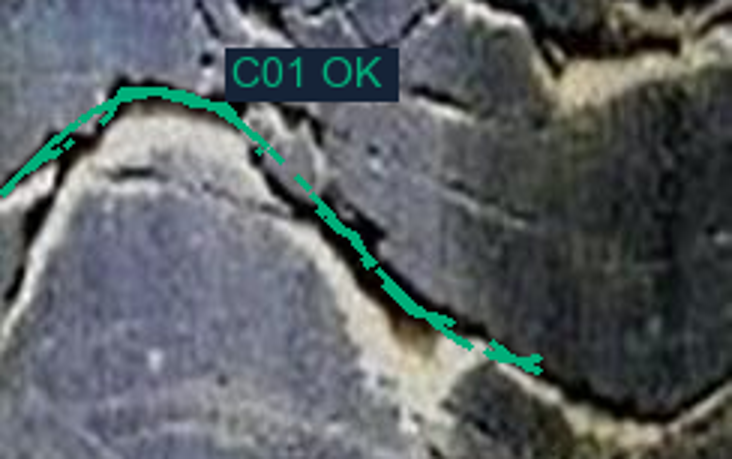
| 参数 | 数值 |
|---|---|
| 振幅 | 44.65 px |
| 相位 | −2.913 rad |
| 中心纵坐标 | 142.47 px |
| 固定周期 | 244 px（图宽） |
| 观测列覆盖 | 50.82% |
| 拟合残差 RMSE | 2.18 px |
参数基于模型候选点，坐标原点为图像左上角；通过几何门槛表示拟合条件满足，不代表地质身份已确认。
将同一权重导出为 FP32 ONNX，以独立推理入口对照 PyTorch 的输出与整图耗时。
| 同一 RIFT 权重 | 整图耗时 | 输出对照 |
|---|---|---|
| PyTorch CPU | 2.49 秒/图 | 三图阈值掩码一致 概率最大绝对差 8.06e-5 |
| ONNX Runtime CPU | 1.41 秒/图 |
本机 CPU、两线程，3 张图各重复 3 次，汇总各图耗时中位值；含预处理、推理与拼接，不含模型加载和磁盘 IO。速度比约 1.76×。
在五张固定钻孔图上比较 RGB、灰度、DnCNN 恢复后分割与传统 Frangi 分割。结合候选连续性、纹理响应与几何质检，保留 RGB 输入为主线；恢复模型不作为裂隙分割的默认预处理。
IMAGE RESTORATION / CONTROLLED FINE-TUNING
复用 KAIR 的 DnCNN 预训练权重，开发配对退化生成、微调选模、统一评测与报告管线。将随机噪声与行/列条带组合为训练输入，对照原版、传统方法和微调模型。
200 张 DIV2K 灰度工作图按 160 / 20 / 20 划分训练、验证和测试；固定种子生成高斯、条带、混合退化及干净输入。
两臂使用相同预训练初始化、裁块序列与 1000 步预算，仅改变退化分布；验证集选模，测试集独立评测。
以 PSNR / SSIM、梯度误差和方向残差评价结果；保存逐图输出与结构测试图，检查细线、纹理和干净输入损伤。
| 测试输入 | 传统方法 | 原版 DnCNN | 混合微调 | 相对原版 |
|---|---|---|---|---|
| 合成条带 | 28.74 | 27.22 | 28.95 | +1.74 |
| 高斯＋条带 | 23.72 | 25.95 | 27.14 | +1.19 |
| 纯高斯 | 23.80 | 30.85 | 30.12 | −0.72 |
| 干净输入保真 | 28.94 | 49.96 | 36.87 | −13.09 |
同一组 20 张独立测试图，每图生成四类输入，按图计算指标再取均值。参考图为最长边 512 的灰度工作图；单次训练、固定合成退化。传统方法为行列趋势校正＋非局部均值去噪。
合成条带与混合退化上的 PSNR 高于原版，但纯高斯和干净输入保真下降，部分细纹理被平滑。条带条件下微调版与传统方法的 PSNR 接近，SSIM 分别为 0.869 / 0.880；不据单一指标判断全面优劣。
程序生成宽暗带、细线与高频纹理，观察处理前后的结构变化。下图是单个结构测试案例，与上表自然图均值分开统计。
此例中，微调版的条带响应较原版减弱，仍有残留；传统方法的抑制更充分。算法选择需要同时观察噪声类型与结构损伤。
代码与权重参考 KAIR / DnCNN ↗；训练与评测数据来自 DIV2K ↗。本页恢复图片均为程序生成测试图。
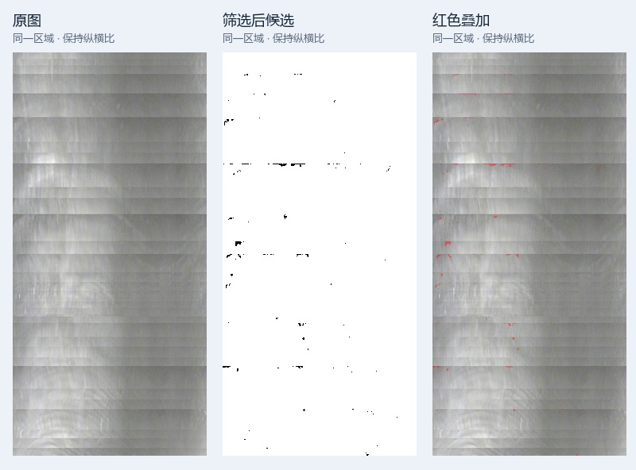
拼接线、泥浆与钻进痕迹会影响候选分布，此例用于观察复杂成像条件下的模型输出。